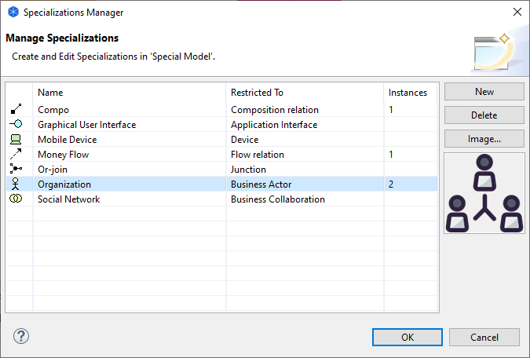

特例化管理器允许您创建、修改和删除ArchiMate概念的特例化。
ArchiMate 规范描述了元素和关系的特殊化的使用：
“特例化是一种基于现有元素或关系定义新元素或关系的简单而强大的方法。特例化元素继承其广义元素的属性......此外，可以为特例化概念引入新的图形符号，但最好与通用概念的表示法相似；例如，通过添加图标或其他图形标记，或更改现有图标。特例化的元素或关系非常类似于 UML 中使用的构造型。带有尖括号的构造型表示法也可以用来表示一个特例化的概念。”
有关详细信息，请参阅语言自定义机制。
特例化管理器可从主“工具”菜单获得，并通过单击属性窗口中对象特例化右侧的“...”按钮.
特例化管理器
要创建新的特例化，请单击“新建”按钮或在表格中双击。提供名称并选择特例化将被限制的概念类型。请注意，您不能拥有多个具有相同名称和概念类型的特例化。如果在模型中使用了特化，则实例的数量会显示在“实例”列中。
要删除一个或多个特例化，请在表格中选择它们并按“删除”按钮。任何引用已删除特例化的概念都将不再引用它。
元素特例化（接合除外）也可以与将在视图中使用特例化元素时显示的图像相关联。为对象选择图像或从“图像...”按钮或双击图像预览框清除图像。有关详细信息，请参阅“向对象添加图像”。
可以通过在其属性窗口中选择一个概念来将其应用到一个概念。